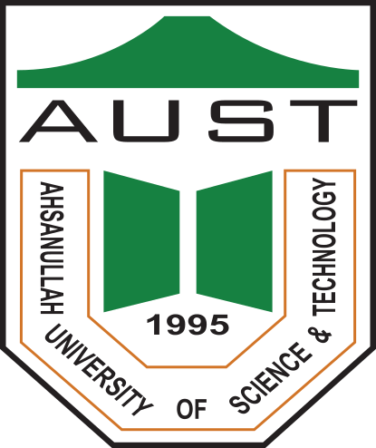
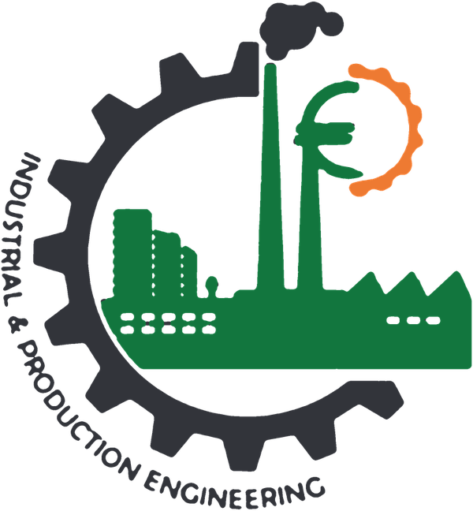

Masters
To be added
To be added
Energy Forecasting · Energy Policy · Management Systems

Hi! I'm Jawad. I'm a Lecturer in Industrial and Production Engineering at Ahsanullah University of Science and Technology (AUST) in Dhaka, where I graduated first in my class of 87 with the Khan Bahadur Ahsanullah Gold Medal.
My research centers on energy management: forecasting energy generation and demand with machine learning, studying energy policy, and designing management systems for emerging economies like Bangladesh. Earlier, I worked on biosignal processing and machine learning for occupational health in the ready-made garments industry.
Currently

Lecturer, Department of Industrial and Production Engineering, AUST
Bachelors
B.Sc. in Industrial and Production Engineering, AUST, Gold Medalist
Previously

Research Assistant, occupational safety and ergonomics in the RMG industry
§ 02 / News
Sep 2026
Appointed Faculty Advisor of the IEOM Society AUST Student Chapter.
2026
Our papers were published in Energy Nexus, Decision Analytics Journal and Waste Management Bulletin.
Nov 2025
Joined the Thesis Committee and became Department Fire Warden at AUST IPE.
2025
Paper on multivariate jute forecasting published at ICMIEE 2025, and abstract on equipment outage forecasting in the Cumilla grid circle accepted at ICMEAS 2025.
Jun 2025
Joined the Department of Industrial and Production Engineering at AUST as a Lecturer.
May 2025
Received the Khan Bahadur Ahsanullah Gold Medal for the highest CGPA in my graduating batch (3.97 / 4.00).
Nov 2024
Won the 100% Scholarship (ISCEA Prize) at the Supply Chain Case Competition, placing in the top 6 teams.
Oct 2024
First Runner-up at the Supply Chain Research Challenge 4.0, Bangladesh Institute of Human Resource Management.
§ 03 / Education
To be added
To be added
Department of Industrial and Production Engineering · Dhaka, Bangladesh
Dec 2020 - Feb 2025
B.Sc. Industrial and Production Engineering
CGPA 3.97 / 4.00, ranked 1st of 87. Khan Bahadur Ahsanullah Gold Medal, Dean's List of Honor.
Thesis: Performance Evaluation of Machine Learning Algorithms for Multivariate Energy Forecasting: Towards Effective Energy Management in Bangladesh.
Supervised by Prof. Dr. Mohammad Sarwar Morshed.
To be added
To be added
§ 04 / Experience
Lecturer
Department of Industrial and Production Engineering
Jun 2025 - Present
Teaching undergraduate courses in manufacturing and industrial engineering. Developing course material under outcome-based education (OBE), improving laboratories and supervising students.
Research Assistant
Department of Industrial and Production Engineering · PI: Mr. Shah Murtoza Morshed
Apr 2024 - Jun 2025
Worked on Enhancing Occupational Safety and Ergonomics in Bangladesh's RMG Industry, a multisensory workload analysis with machine learning. Collected and processed ECG, EMG, EDA and EEG signals from garment workers and built models validated with leave-one-subject-out cross-validation.
Faculty Advisor
Industrial Engineering and Operations Management Society
Sep 2026 - Present
Description to be added
Member, Thesis Committee
Department of Industrial and Production Engineering
Nov 2025 - Present
Description to be added
Department Fire Warden
Department of Industrial and Production Engineering
Nov 2025 - Present
Description to be added
Member
Department of Industrial and Production Engineering
Jul 2025 - Present
Description to be added
Member, Industrial Attachment and Farewell Committee
Department of Industrial and Production Engineering
Jun 2025 - Nov 2025
Description to be added
Amateur Radio Operator
Emergency communication
Aug 2024
Supported communication as an amateur radio operator during the Feni flood relief effort.
§ 05 / Research
No papers match these filters.
§ 06 / Projects
Undergraduate Thesis · 2025
Performance evaluation of machine learning algorithms for multivariate energy forecasting, towards effective energy management in Bangladesh. Supervised by Prof. Dr. Mohammad Sarwar Morshed.
Research Project · 2024-2025
A multisensory workload analysis with machine learning for Bangladesh's ready-made garments industry. ECG, EMG, EDA and EEG signals collected from garment workers, with models validated using leave-one-subject-out cross-validation. PI: Mr. Shah Murtoza Morshed.
Product Design · 2023
A device that produces water from humid air, built with a team at AUST IPE. First place at the IPE Product Showcasing, AUST, February 2023. Published in the Journal of Mechanical Engineering, IEB, Vol. ME 53, No. 1, 2023.
Ergonomic Design
Description to be added
Ergonomic Design
Description to be added
Facility Layout
Description to be added
§ 07 / Talks
Talk title
Role
To be added
Talk title
Role
To be added
Talk title
Role
To be added
§ 08 / Teaching
Ahsanullah University of Science and Technology
Lecturer
Undergraduate teaching in manufacturing and industrial engineering courses in the Department of Industrial and Production Engineering. Curriculum development under outcome-based education (OBE), laboratory improvement and student supervision.
Jun 2025 - Present
Courses taught
Course list
To be added
Institution
Role
To be added
§ 09 / Skills
To be added
To be added
§ 10 / Personal
Personal introduction to be added
Map
To be added
Gallery
Message to be added
ResearchGate
Md-Jawad-Rouf ↗Research
Google Scholar ↗GitHub
mdjawadbinrouf ↗Currently in
Dhaka, Bangladesh